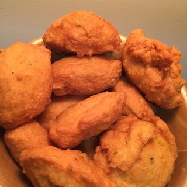
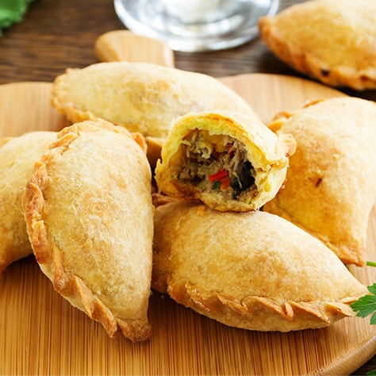
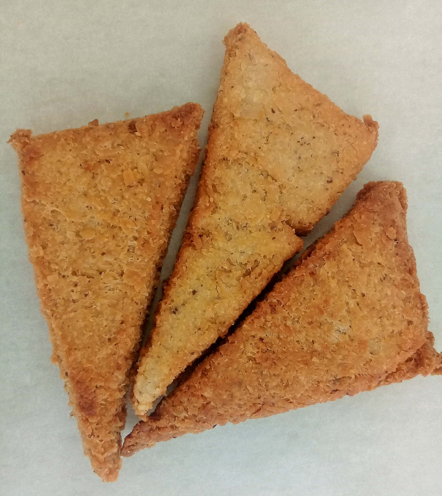
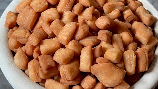
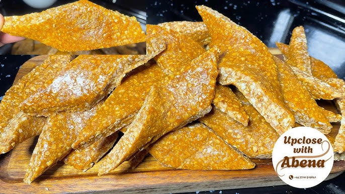
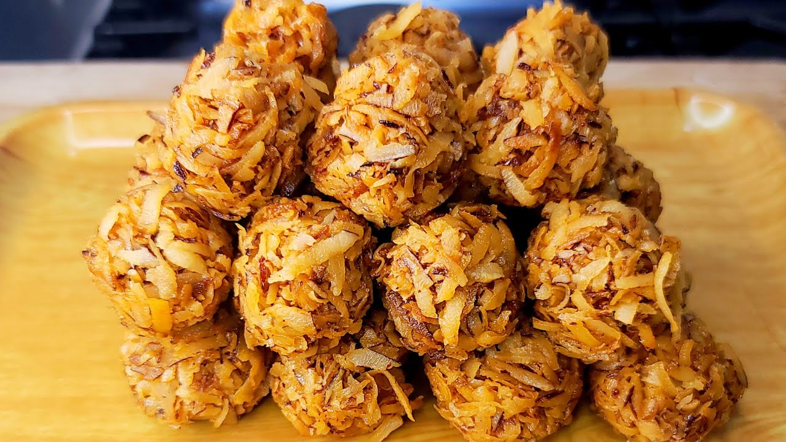
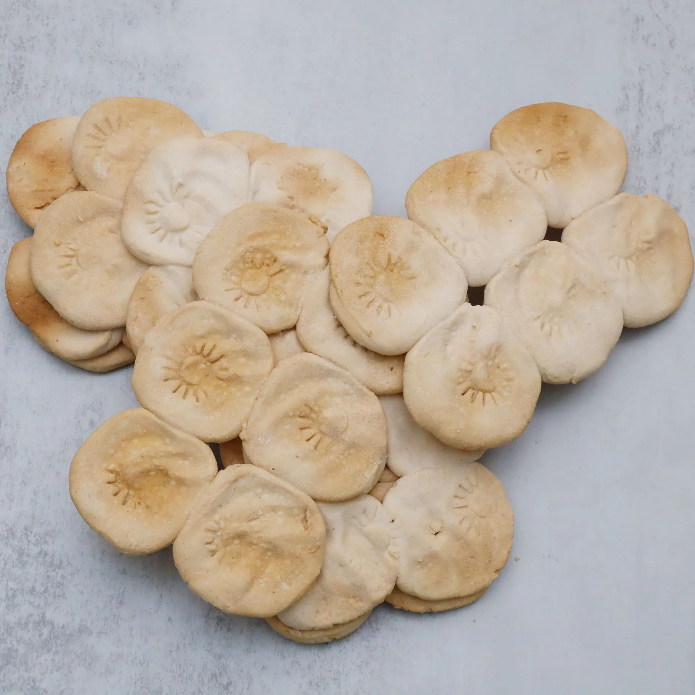
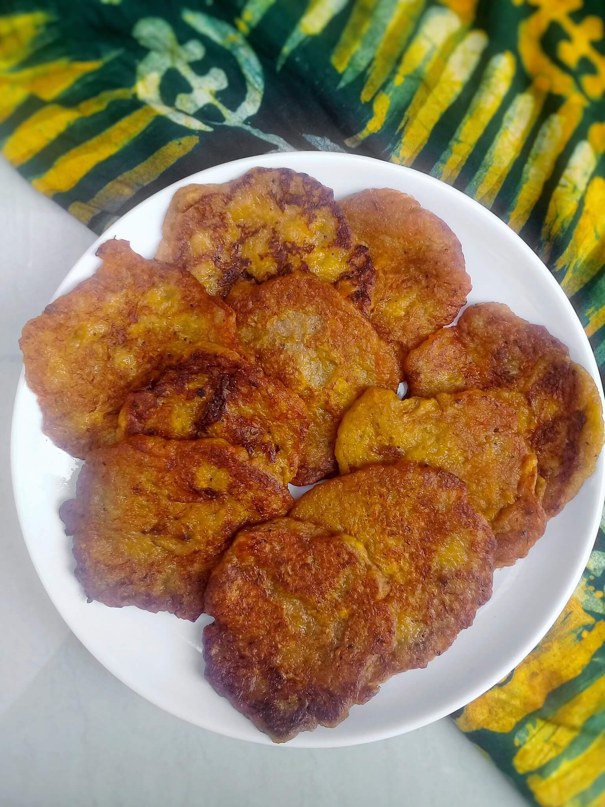

Featured Local Pastries

Bofrot (Puff-Puff)

Koose

Ghanaian Meat Pie

Poloo (Fried Coconut Dough)

Atwemo (Twisted Fried Dough)

Nkate Cake (Peanut Brittle)

Kube Cake (Coconut Candy)

Ayigbe Biscuit
